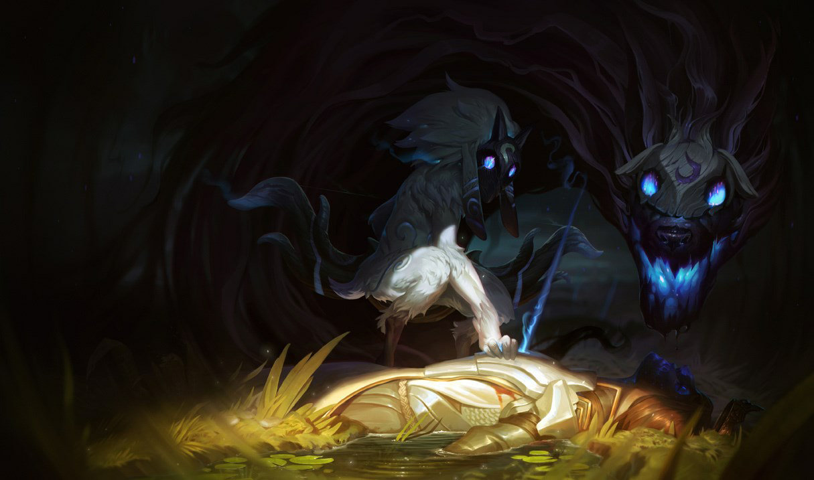
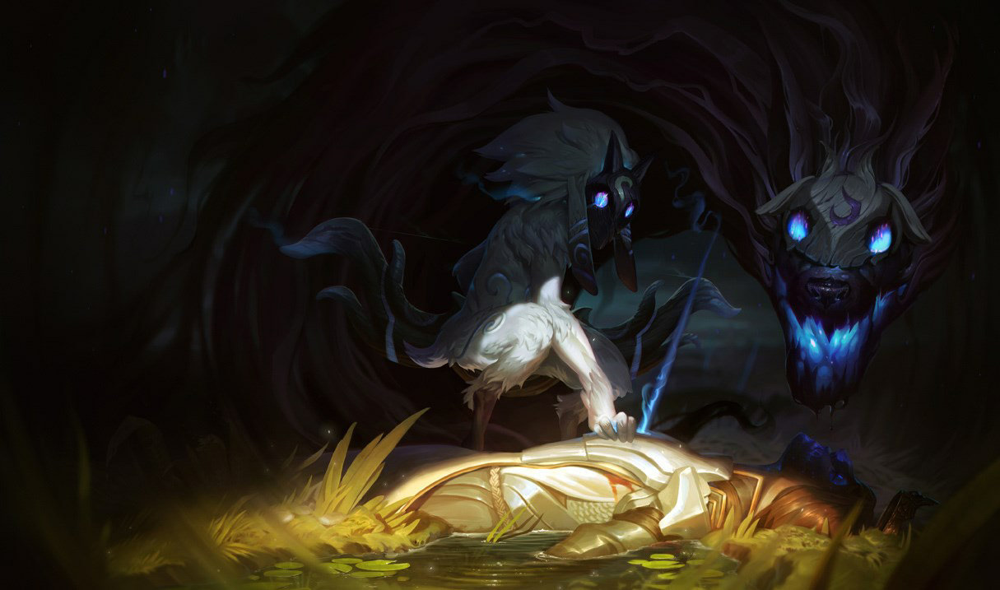
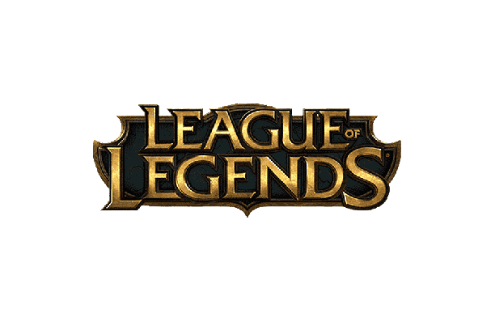

League of Legends foi lançado em 27 de outubro de 2009 nos Estados Unidos. Brandon Beck e Marc Merill, fundadores da Riot Games, quiseram desenvolver um MOBA que seria um sucessor espiritual do Dota 2, o seu maior concorrente nos dias atuais. Talvez o principal motivo do esmagador sucesso do MOBA da Riot no cenário competitivo seja sua jogabilidade, rica e complexa. Com mais de 100 personagens jogáveis e centenas de habilidades diferentes, League of Legends tem conteúdo para agradar até mesmo os jogadores mais exigentes.